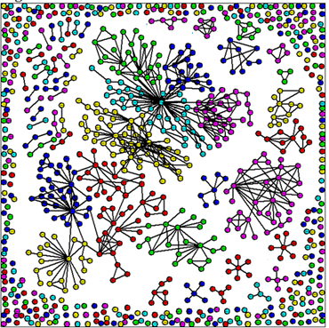

Bitter Friends:
Relationships between Violent Non-State Actors
Bloody Brothers: Alliance Formation between Militant Groups
- How do militant networks form?
- What explains observed variation in network motifs?
- How does individual behavior aggregate into networks?
- Empirical Strategy
- Formal computational model/simulation
- Compare simulated evolution to data
- Theory
- Asymmetric and Symmetric strategies to solve problems
- Ideological homophily, tactical heterophily

Main contribution: A model of network aggregation
Anti-Social Networks: The Effects of Terrorist Alliance Network Structure on Lethality, Tactics, and Survival
- How are militants constrained by networks?
- Network structure shapes the flow of goods and vulnerabilities
- Different structures are more advantageous for different things
Tying it together: This paper relies on assumptions about how the networks aggregate for theory and causal inference. These assumptions are examined in Paper 1.
Theory:
- Hierarchical Networks
- Hubs specialize in information processing, giving more contextualized information to members for lower cost
- Vulnerable to removal of hubs-> asymmetric with strong hubs
- Interaction
- Centrality advantage stronger in hierarchical networks
- Flat Networks
- Costlier information flow, lower tactics diffusion
- Vulnerable to unravelling -> uniformly strong groups
- Density
- Density = redundancy. Increased density doesn't increase goods but does increase vulnerability
Bloody Benefactors: Alliance Formation between Militant Groups
How do transnational groups select local allies?
Theory:Key Tradeoffs
- Security of investment: strong enough to survive, not so strong that they are autonomous
- Security/Prosperity
- Efficiencies from specialization
- Efficiencies from joint production, non-zero-sum spoils
- Autonomy
- Selection of joint activities
- Commitment problems
Empirical Strategy
- Formal Model
- Case study/ Vignettes
- Large-n with BAAD2
Sponsorship Networks
With Philip Potter & Research Team
- How do state sponsors perturb the militant network?
- H: Sponsors are greedy allies who want exclusive influence
- Alt H: Sponsors funnfel funds into general conflicts, cause expansion of allies
- Time Series Latin American Militant Networks
Rebel Alliance Formation
With Victor Asal & Karl Rethemeyer
- How do groups select their allies within a civil conflict?
- Empirical paper on correlates of alliance rather than formal model
- System/Network theories of alliance rather than aggregation of dyadic decisions
- BAAD2:Time Series Rebel Alliance
Timeline
2015/2016
- November:Theory section for Paper 1 for CGIR
- December:Working computational model for 1 for SPSA
- January:Complete reanalysis for Paper 2 with BAAD1 data
- February:New draft of streamlined Paper 3 formal model for ISA and feedback at MPSA
- March:Categorize Paper 1 computational model output in time for MPSA
- June:Complete draft of Paper 2 for PolNets, final feedback pre-publication
2016/2017
- August:Complete draft of Paper 3 in time for APSA
- December:Finish Paper 3, submit to journals
- April 2017:Finish Paper 1 in time for last round of feedback at Sunbelt before submission
- May 2017:Defend
Flexible second year job-market and schedule overflow.
 Laila Wahedi • law98@georgetown.edu • Follow along at wahedi.us
Laila Wahedi • law98@georgetown.edu • Follow along at wahedi.us
/